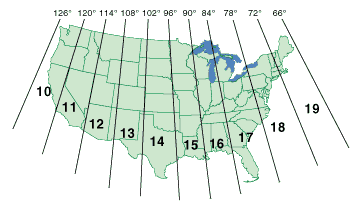
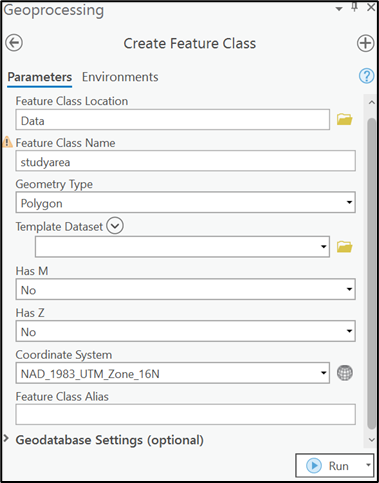
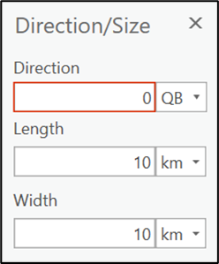
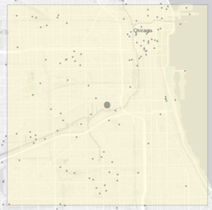

# install.packages(c("dplyr", "tidyverse", "openxlsx","sf", "sp")) if necessary
library(dplyr) # data wrangling with pipe syntax
library(tidyverse) # data wrangling
library(openxlsx) # use for importing data in Excel format
library(sf) # simple features data package
library(sp) # spatial data package
library(ggplot2) # creating plots
library(psych) # calculating summary statistics
library(raster) # create raster dataset
options(scipen=999, digits = 2) # format output for data tablesGEO 3/446 Exercise #2
Air Dispersion Modeling and Visualization
Background
Air quality (both outdoor/ambient and indoor/household) is associated with a broad range of disease outcomes (e.g., asthma, cancer) and is globally responsible for millions of deaths each year (Landrigan 2017). The Clean Air Act (CAA) is the comprehensive US federal law that regulates air emissions from stationary and mobile sources(US EPA 2013). Among other things, the Act authorizes the US Environmental Protection Agency (EPA) to establish National Ambient Air Quality Standards (NAAQS) (EPA 2014) designed to protect public health from six outdoor air pollutants: particulate matter, ozone, nitrogen oxides, sulfur dioxide, carbon monoxide and lead (“criteria” pollutants). The EPA is also required to identify and regulate emissions of hazardous air pollutants (HAPs) which, since 1990, includes 188 pollutants.
Additional reading on the effects of air pollution on health
Each year, the American Lung Association publishes its annual State of the Air report (ALA 2023)which examines two of the most widespread and dangerous pollutants from this group, particulate matter and ozone. Other readings concerning the environmental justice implications of land use planning and toxic air pollution include “Incompatible Land Uses and the Topology of Cumulative Risk” (Lejano and Smith 2006) and “Concentrating risk? The geographic concentration of health risk from industrial air toxics across America” (Ard and Bullock 2020).
This exercise involves the evaluation of ambient air concentrations of criteria and toxic pollutants within a student-specified area in California. Students will model concentrations using regularly updated, facility-level emissions made available from the EPA (i.e., AirData National Emmissions Inventory and Toxic Release Inventory), hourly meteorological data from local weather stations and AERMOD, an air dispersion model developed by the EPA.
AERMOD is presently the model recommended for US government agencies to estimate pollutant concentrations from stationary (and mobile) sources in urban areas. AERMOD allows for the specification of multiple sources, facility-specific release patterns (it also allows for specification of uneven terrain and effects of nearby building downwash, but we won’t take advantage of these functions in this exercise). The model requires that hourly wind patterns (direction and speed) and temperature data be input. Near-field models like AERMOD differ from far-field models in that the former are able to capture initial mixing phenomena that occur just after the plume leaves the source (such as a smokestack). The AERMOD near-field model is best suited for study areas no greater than 50km by 50km. For this exercise, students will model a custom study area with dimensions 10km by 10km.
Students will save maps, tables and summaries of spatial analyses in a PowerPoint presentation (or, optionally, a document created with Quarto markdown in R) to be submitted via the course web page. Students are welcome to work collectively with classmates to overcome obstacles experienced while completing the required tasks, although all submissions will be unique given that students will choose their own study areas that have different distributions of pollution sources (and therefore different patterns of air pollutant concentrations). Of course the interpretations will also be your own. As in all assignments for this class, you will be asked to not only produce attractive (strive for cartographic perfection!) and meaningful maps, but also describe patterns presented within them. The three sections below step you through the process to create the above deliverable. (For some of the more complicated procedures, online videos will be made available on the course D2L under the Exercise #2 content folder.)
Step 1. Create and prepare a new R project
In RStudio, create a project within a new directory (e.g., GEO336/exercise_02) of your general course folder. Here you will save files related to exercise #2. Create the following folders within the new exercise-specific directory, “aermod”, “data”, “maps” and “scripts”.
Install and activate R packages
Use the following code to activate the packages required to download and transform data needed for the exercise.
Create data processing script in R
In RStudio, create a new script file for storing data processing code relevant to this exercise. Create the blank script file by first navigating to the “scripts” directory you created in your project working directory and clicking “New Blank File” in the files pane. Name the script something intuitive (e.g., “exercise02.R”).
Step 2. Download and transform emissions and toxicity data
Download NEI data
Students will draw from two publicly available datasets for this assignment: NEI and TRI. The National Emissions Inventory (NEI) is a comprehensive and detailed estimate of air emissions of criteria pollutants, criteria precursors, and hazardous air pollutants from air emissions sources. The NEI is released every three years based primarily upon data provided by State, Local, and Tribal air agencies for sources in their jurisdictions and supplemented by data developed by the US EPA. The NEI is built using the Emissions Inventory System (EIS) first to collect the data from State, Local, and Tribal air agencies and then to blend that data with other data sources. Use the following code to download and subset the latest NEI data to California.
# National Emissions Inventory (zip format)
temp <- tempfile()
download.file("https://gaftp.epa.gov/air/nei/2020/data_summaries/Facility%20Level%20by%20Pollutant.zip",temp)
NEI_2020_raw <- read_csv(unz(temp, "emis_sum_fac_23959.csv"))
unlink(temp)
# format NEI data
# filter sulfur dioxide releases in California
NEI_2020_form <- NEI_2020_raw %>%
rename(
fac_name = `company name`,
site_name = `site name`,
fac_street = address,
fac_city = city,
fac_state = `postal abbreviation`,
fac_zip = `zip code`,
naics_code = `primary naics code`,
latitude = `site latitude`,
longitude = `site longitude`,
pollutant_code = `pollutant code`,
pollutant_desc = `pollutant desc`,
pollutant_type = `pollutant type(s)`,
emissions_uom = `emissions uom`,
emissions = `total emissions`
) %>%
dplyr::select(
fac_name,
site_name,
fac_street,
fac_city,
fac_state,
fac_zip,
naics_code,
latitude,
longitude,
pollutant_code,
pollutant_desc,
pollutant_type,
emissions_uom,
emissions
) %>%
filter(fac_state == "CA",
pollutant_code == "SO2")Download TRI data
The US EPA’s Toxics Release Inventory (TRI) program tracks the management of certain toxic chemicals that pose a threat to human health and the environment. Large US facilities (i.e., those emitting 10 tons or more per year) in different industry sectors must report annually how much of each chemical is released to the environment and/or managed through recycling, energy recovery and treatment. Data containing the 100 most-used data fields from the TRI Reporting Form R and Form A Certification Statement are made available in various formats on the TRI Basic Data web page for the 2021 reporting year. The data can be downloaded for the entire US or by state. Reference information for this file in PDF format is available on the TRI website. Use the following code to download and subset the latest TRI data to California.
TRI_2021_raw <- read_csv("https://data.epa.gov/efservice/downloads/tri/mv_tri_basic_download/2021_US/csv")
# format TRI data
# filter data stack air releases in California
TRI_2021_form <- TRI_2021_raw %>%
rename(
year = 1,
fac_name = 4,
fac_street = 5,
fac_city = 6,
fac_county = 7,
fac_state = 8,
fac_zip = 9,
latitude = 12,
longitude = 13,
parent_co = 15,
sector_code = 19,
sector_name = 20,
chemical = 34,
casno = 37,
srsid = 38,
caa_chemical = 39,
carcinogen = 43,
pfas = 45,
emissions_uom = 47,
fugitive_air = 48,
stack_air = 49,
water = 50,
underground = 51
) %>%
dplyr::select(
year,
fac_name,
fac_street,
fac_city,
fac_county,
fac_state,
fac_zip,
latitude,
longitude,
parent_co,
sector_code,
sector_name,
chemical,
casno,
srsid,
caa_chemical,
carcinogen,
pfas,
emissions_uom,
fugitive_air,
stack_air,
water,
underground
) %>%
filter(fac_state == "CA",
stack_air > 0)Download RSEI data
EPA’s Risk-Screening Environmental Indicators (RSEI) model helps policy makers, researchers, and communities explore data on releases of toxic substances from industrial and federal facilities. The model considers the fate and transport of chemicals through the environment, each chemical’s relative toxicity, and potential human exposure. When combined with the total releases of chemicals by location, RSEI model results can be used to help identify locations of toxic hot spots, monitor potential human health impacts over time, prioritize investigative work and prioritize the allocation of agency resources, more generally. Use the following code to import the latest RSEI toxicity weights from the course GitHub, then join RSEI toxicity weights to the TRI data. Note that the toxicity weights are reduced by a factor of 10^5 so that dispersion values can be more easily computed using AERMOD.
# RSEI data (Excel format)
# This reference dataset is reguarly updated at https://www.epa.gov/rsei/rsei-toxicity-data-and-calculations
RSEI_v2311_raw <- read.xlsx("https://github.com/justenvirons/pedagogy/raw/main/GEO346_2023_FallQuarter/Exercise_02/data/toxicity_data_rsei_v2311.xlsx", sheet=2)
RSEI_v2311_form <- RSEI_v2311_raw %>%
rename(casno = CASStandard) %>%
mutate(itw = as.numeric(ITW)) %>%
dplyr::select(casno,
itw)
# Join TRI with RSEI inhalation toxicity weights (ITW)
# Drop coordinates with NA values
TRI_2021_form_wtd <- TRI_2021_form %>%
left_join(RSEI_v2311_form, by = "casno") %>%
mutate(stack_air_itw = stack_air * itw/1000000) %>%
drop_na(stack_air_itw) %>%
dplyr::select(-itw) %>%
drop_na(c(latitude,longitude))
Learn more about RSEI results
Watch the below video to learn more about the results produced by EPA’s Risk-Screening Environmental Indicators (RSEI) model.
Create and write shapefiles
Modify the below code to save the NEI and TRI air pollution tables as shapefiles into your working directory, perhaps in the “data” folder (e.g., “data/TRI_2021.shp” and “data/NEI_2020.shp”). If you are choosing to examine an area located within northern California, use UTM 10N (EPSG: 26910) or UTM 11N (EPSG: 26911) if your study area is in southern California. See a general map of the UTM zones for the contiguous United States below.

rm(TRI_2021_form_wtd_geom)
TRI_2021_form_wtd_geom <-
st_as_sf(TRI_2021_form_wtd,
coords = c("longitude", "latitude"),
crs = 4269) %>% st_transform(crs = 26911) %>%
st_as_sf() %>%
bind_cols(st_coordinates(.))
# create basic plot of TRI facilities
plot(TRI_2021_form_wtd_geom['srsid'])
# write TRI data to shapefile
st_write(TRI_2021_form_wtd_geom,
"enter working directory and desired file name",
append = FALSE)
NEI_2020_form_geom <-
st_as_sf(NEI_2020_form,
coords = c("longitude", "latitude"),
crs = 4269) %>% st_transform(crs = 26911) %>%
st_as_sf() %>%
bind_cols(st_coordinates(.)) # or crs = 26910 if in northern California
# create basic plot of NEI facilities
plot(NEI_2020_form_wtd_geom['srsid'])
# write NEI data to shapefile
st_write(NEI_2020_form_geom,
"enter working directory and desired file name",
append = FALSE)Step 3. Create and add data to ArcGIS Pro project
Add NEI and TRI to ArcGIS Pro
Create a new ArcGIS Pro project on your computer under the maps directory in your R project folder. In your ArcGIS Pro map project, under the “Map” menu, click the “Add Data” option on the toolbar and navigate to the directory where you exported the NEI and TRI datasets. You may need to click the “Connect to Folder” and navigate to your project directory. Select all three of the files and add to the map frame. They should draw automatically and appear in the table of contents.
Download and add air basin boundaries to ArcGIS Pro
Use the following code to download the California county, air basin and air district boundary file from the California Air Resources Board (CARB) GIS Library web page and extract files to your “data” directory. The air basin boundaries will be helpful to identify the entity that provides AERMOD-ready meteorological data near your facility given that AERMOD requires such data to estimate the geographic distribution of releases over time.
temp <- tempfile()
download.file("https://ww3.arb.ca.gov/ei/gislib/boundaries/ca_co_ab_dis.zip",
temp)
unzip(zipfile = temp,
exdir = "data",
overwrite = TRUE)
unlink(temp)Download meteorological data
The California Air Resources Board (CARB) makes available AERMOD-ready meteorological data for 28 select weather stations throughout the state while the various air quality districts make available similarly formatted data for weather stations within their respective jurisdictions. Links to the district-specific weather station and data are also available via district links on the ARB meteorological data webpage. Save the appropriate meteorological data in your “aermod” folder.
Step 4. Create and center study area
You are tasked with estimating emissions from an existing facility. You will need to create a custom and spatially explicit study area centered on your facility of interest in order to run the needed calculations. Create your custom study area by doing the following:
First, identify a single facility in the NEI facilities shapefile that emits considerable amounts of sulfur dioxide (SO2), perhaps over 100 tons per year. Zoom to the facility in ArcGIS Pro.
Under the “View” menu, click the “Catalog Pane” option to view project contents. Navigate to your project folder and right-click on the “data” directory to create a new shapefile. With your project directory selected, open the File menu and select the “New/Shapefile” option. In the “Create Feature Class” dialog box, give your polygonal shapefile an appropriate name (e.g., studyarea). Be sure the output coordinate system corresponds with the other shapefiles in your map frame (i.e., UTM Zone 10N, NAD 1983). When finished, add the new shapefile to the map.

In the “Edit” menu, click “Create” to begin delineating the study area polygon. In the “Create Features” dialog, use the square template to construct the polygon. With the pencil tool activated, create a 10km by 10km square by clicking the map to create the initial vertex. Don’t be concerned about the specific location of the initial vertex (and study area) at this time. While still editing, right-click inside the map frame and select the “Direction/Size” option to make visible the associated dialog box. Enter “0” for direction and 10km for both length and width. When finished entering the dimensions click the Enter key on your keyboard to create the new feature.

Lastly, center your study area so that the facility you identified is located in the (approximate) center. Do this by clicking on the “Edit” menu and selecting the study area polygon. Use the “Move” tool to position the polygon in the desired location. Save your edits. Under the “Share” menu, click “Capture to Clipboard” and paste the NEI facilities map into the appropriate PowerPoint slide.

Step 5. Model single facility pollutant (SO2) concentrations using AERMOD
In this part of the exercise you will analyze the concentrations of sulfur dioxide emitted from the facility you selected within your study area. Note that you may need to run the AERMOD executable locally on your computer if Virtual Lab returns an error.
Customize parameters in the AERMOD input file (AERMOD.INP)
Now you will use AERMOD to model emissions from the facility you selected.
Using a text editor (such as notepad), open the AERMOD.INP (i.e., runstream) file located in the aermod folder. You will need to modify parameters in this file to estimate geographic distributions of pollutant concentrations from your selected facility. The runstream file is divided into five functional “pathways.” These pathways are identified by a two-character pathway ID placed at the beginning of each runstream image. The start and end of each pathway in the code are bookmarked with “STARTING” and “ENDING” statements. The pathways and the order in which they are specified in the runstream are as follows:
CO - for specifying overall job COntrol options;
SO - for specifying pollution SOurce information;
RE - for specifying REceptor information;
ME - for specifying MEteorology information;
EV - for specifiying EVent processing;
OU - for specifying OUtput options.
For this exercise, you will be using all but the event (EV) pathway. The default contents and parameters of the AERMOD runstream file you extracted to your aermod directory are shown below.
CO STARTING
CO TITLEONE SINGLEFAC
CO MODELOPT CONC FLAT
CO AVERTIME 1 3
CO POLLUTID SO2
CO RUNORNOT RUN
CO ERRORFIL ERRORS.OUT
CO FINISHED
SO STARTING
SO LOCATION FAC1 POINT 385362 3741767 0.0
SO SRCPARAM FAC1 9.13 76. 353. 5. 3.0
SO SRCGROUP ALL
SO FINISHED
RE STARTING
GRIDCART NET1 STA
XYINC 380239 50 200. 3736617 50 200.
GRIDCART NET1 END
RE FINISHED
ME STARTING
ME SURFFILE KLGB_v9.SFC
ME PROFFILE KLGB_v9.PFL
ME PROFBASE 0.0 METERS
ME SURFDATA 23129 2016
ME UAIRDATA 3190 2016
ME FINISHED
OU STARTING
OU PLOTFILE 1 ALL FIRST 1HRMAX1.PLT
OU PLOTFILE 3 ALL FIRST 3HRMAX1.PLT
OU FINISHED- The control pathway (CO) in the runstream code specifies a run entitled SINGLEFAC which calculates average maximum concentrations of a pollutant (here specified as POLLUTID SO2) over 1- and 3-hour periods (AVERTIME 1 3). Concentrations will be calculated in micrograms per cubic meter (µg/m^3) based on an assumed flat terrain (FLAT). Any errors will be saved into an error file named ERRORS.OUT. The default parameters can be used in the control pathway.
CO STARTING
CO TITLEONE SINGLEFAC
CO MODELOPT CONC FLAT
CO AVERTIME 1 3
CO POLLUTID SO2
CO RUNORNOT RUN
CO ERRORFIL ERRORS.OUT
CO FINISHED- The source pathway (SO) code establishes sources of pollution. For this exercise, you will specify a single point source of pollution; your selected facility from the National Emissions Inventory dataset. In the example code, the location (SO LOCATION) coordinates (X and Y) reflect those for a facility in Long Beach, California and the source parameters (SO SRCPARAM) specify the rate of SO2 emissions from the selected facility in the proper units (grams per second), assuming a steady state of releases from the facility over a one-year period. Change these parameters to reflect those of the facility you selected. The AERMOD_Formatting.xlsx spreadsheet extracted to your aermod folder provides tools to help with formatting the SO LOCATION AND SO SRCPARAM parameters including converting tons per year to grams per second (g/s) using the following formula:
\[ g/s = (tons/year\*2000 pounds/year\*453.59237 grams/pound)/(365 days/year \* 24 hrs/day \* 60 minutes/hour \* 60 seconds/minute)) \] Use the default (i.e., existing) settings for the release height, stack gas exit temperature, stack gas exit velocity, and stack diameter (e.g., 76. 353. 5. 3.0) for the facility if not known.
SO STARTING
SO LOCATION FAC1 POINT 385362 3741767 0.0
SO SRCPARAM FAC1 9.13 76. 353. 5. 3.0
SO SRCGROUP ALL
SO FINISHED- The receptor (or RE) pathway specifies a Cartesian grid (GRIDCART) with 50 nodes spaced every 200 meters in the x direction and the same in the y direction beginning at the southwest corner of the study area. The example code designates the first coordinate, 380239, as the location of lower left vertex of the study area in the x direction and the second coordinate, 3736617, as the location of the lower left vertex of the study area in the y direction in UTM coordinates. The entire grid spans 10 km by 10 km. You can again use the AERMODFormatting.xlsx spreadsheet to format the GRIDCART XYINC parameter in the AERMOD.INP file. Change the coordinates in the receptor pathway to match those of the southwest corner of your study area.
RE STARTING
GRIDCART NET1 STA
XYINC 380239 50 200. 3736617 50 200.
GRIDCART NET1 END
RE FINISHED- Edit the meteorological (ME) pathway, so that it references the surface (SURFILE) and upper air (PROFFILE) meteorological files for the meteorological station nearest your study area. The example code references the associated files for the Long Beach Municipal Airport (KLGB_v9.SFC and KLGB_v9.PFL). Also note the codes for the surface (SURFDATA) and upper air (UAIRDATA) meteorological stations used in your data and the year of the data being processed. For example, in the sample AERMOD.INP file, the surface meteorological station code is “23129” and the upper air station code is “3190” and the meteorological data span through 2016. These identification codes can be found in the header of the *.SFC meteorological file. The meteorological pathway also allows users to specify discrete start and end dates. In this example, the STARTEND parameter is set to a single year of meteorological data (1/1/2016 to 12/31/2016). These dates may need to be changed depending on the year of your meteorological data.
ME STARTING
ME SURFFILE KLGB_v9.SFC
ME PROFFILE KLGB_v9.PFL
ME PROFBASE 0.0 METERS
ME SURFDATA 23129 2012
ME UAIRDATA 3190 2012
ME STARTEND 2016 01 01 2016 12 31
ME FINISHED- Lastly, set the output (OU) pathway to create four plot files, with each representing key concentrations over given periods of time. The default input file calculates maximum concentrations averaged over one- and three-hour periods. Concentrations will be estimated for each of the 2,500 receptors in your study area. The default file names for the output plot files in the OU parameters are 1HRMAX.PLT (for the one-hour concentrations) and 3HRMAX.PLT (for the three-hour concentrations).
OU STARTING
OU PLOTFILE 1 ALL FIRST 1HRMAX1.PLT
OU PLOTFILE 3 ALL FIRST 3HRMAX1.PLT
OU FINISHEDRun the AERMOD model with custom parameters
Once you have changed the parameters in the AERMOD.INP file to match your facility, you are ready to run the newly specified model using AERMOD. To run the model, navigate to the directory where aermod.inp, aermod.exe and the associated meteorological files are located. Double-click the aermod.exe executable file (or drag and release aermod.inp over aermod.exe). Allow AERMOD to cycle through all the days represented in your meteorological data (e.g., 365 days for each year). If you receive an error, check the sources of the error by reading the ERROR.OUT file in notepad or other text editor to review.
Reformat model output data and export as ASCII grid
Once AERMOD has completed the procedure without errors (i.e., if the *.PLT files have been created successfully), you will need to reformat the data in the plot files so that they are readable in ArcGIS Pro. Use the following code to simplify and format the data into five variables, (x for longitude, y for latitude, value for max concentrations, period, date). Use the code to convert the data frame into an ASCII grid and export the grid into your project data folder for import into ArcGIS Pro.
# reformat 1-hour AERMOD fixed width PLT output as R data frame
emissions_1hr_df <-
read.fwf(
file = "aermod/1HRMAX1.PLT",
skip = 8,
widths = c(15, 15, 15, 28, 4, 32, 8)
) %>%
dplyr::select(
x = V1,
y = V2,
value = V3,
period = V5,
date_orig = V7
) %>%
mutate(date = as.Date(substr(date_orig, 1, 6), "%y%m%d"),
hour = as.numeric(substr(date_orig, 7, 8))) %>%
dplyr::select(-date_orig)
# create histogram of 1-hour max concentrations
ggplot(emissions_1hr_df, aes(x=value)) + geom_histogram(color="gray40", fill="gray80")
# create raster grid of 1-hour max concentrations from dataframe, with resolution of 200m
emissions_1hr_grid <- rasterFromXYZ(emissions_1hr_df, res=200)
# set projection and datum of grid in PROJ.4 format
projection(emissions_1hr_grid) = CRS("+proj=utm +zone=11 +ellps=WGS84 +datum=WGS84 +units=m +no_defs")
# plot raster grid of 1-hour max concentrations in R
plot(emissions_1hr_grid$value)
# export raster grid of 1-hour max concentrations as ASCII file
writeRaster(
emissions_1hr$value,
filename = "aermod/emissions_1hr.asc",
overwrite = TRUE,
options = c('TFW=YES')
)
# reformat 3-hour AERMOD fixed width PLT output as R data frame
emissions_3hr_df <- read.fwf(file = "aermod/3HRMAX1.PLT",
skip = 8,
widths = c(15,15,15,28,4,32,8)) %>%
dplyr::select(x = V1,
y = V2,
value = V3,
period = V5,
date_orig = V7) %>%
mutate(date = as.Date(substr(date_orig,1,6),"%y%m%d"),
hour = as.numeric(substr(date_orig,7,8)))
# histogram of 3-hour max concentrations
ggplot(emissions_3hr_df, aes(x=maxconc)) + geom_histogram(color="gray40", fill="gray80")
# create raster grid of 3-hour max concentrations from dataframe, with resolution of 200m
emissions_3hr <- rasterFromXYZ(emissions_3hr_df, res=200)
plot(emissions_3hr$value)
# set projection and datum in PROJ.4 format
projection(emissions_3hr) = CRS("+proj=utm +zone=11 +ellps=WGS84 +datum=WGS84 +units=m +no_defs")
# create preliminary plot of 3-hour max concentrations
plot(emissions_3hr$value)
# export raster grid of 3-hour max concentrations
writeRaster(
emissions_1hr$value,
filename = "aermod/emissions_3hr.asc",
overwrite = TRUE,
options = c('TFW=YES')
)Step 6. Create final maps and figures in ArcGIS Pro
Return to ArcGIS Pro and import the ASCII grids into your existing map via the Catalog Pane or Add Data menu option. Create a custom layout with standard map elements (i.e., north arrow, scale bar and data source, etc.) Modify the symbology for the pollution concentration grids as desired. Copy the 1-hour and 3-hour single facility max concentrations maps and histograms into the appropriate PowerPoint slide. Lastly, copy the statistics for the two grids into the summary table in PowerPoint. Summarize your results. In your write-up, consider the degree to which the single facility you modeled contributes to the overall pollution burden within your study area. Also consider any limitations or concerns you may have about the pollution estimates (e.g., what is excluded from the model).
Cumulative emissions (optional)
Add additional facilities to the SOurce pathway to calculate SO2 emissions for multiple facilities within and proximate to your study area. For the multiple facilities (or cumulative analysis), begin by selecting all facilities inside and within one kilometer of your study area (hint: use the buffer distance option under the “select by location” option under the “Select” menu). Open the attribute table and copy the facility information into Excel. Use the provided AERMODFormatting.xlsx spreadsheet to format source location and source parameter specifications for the new AERMOD facilities. Re-run the AERMOD.INP with updated facility information and plot the results. Compare the modeled pollutant concentrations in the cumulative model to the regulatory reference concentrations (US EPA national air quality standards. Do the concentrations exceed the reference concentrations?
Comparison concentrations
Note that you will need to convert the ppb and ppm standards to ug/m^3 in order to compare with AERMOD output. The 1-hour average primary standard 75 ppb is equal to 196.5 ug/m^3 and the 3-hour average 0.5 ppm secondary standard is equal to 1,310 ug/m^3
Model seasonal variation in toxic air concentrations (optional)
Use the TRI inhalation toxicity weights to model toxic air releases within your study area from large, industrial facilities represented in the latest (2020) EPA’s Toxics Release Inventory or TRI report. The TRI reports emissions by facility for each of the 650 toxics and toxic compounds. Given that every chemical has a different dose-response curve or, more simply, a different toxicological profile, use the inhalation toxicity weighted factors (ITW) from EPA’s Risk-Screening Environmental Indicators (RSEI) to model pollution burden. Change the STARTEND parameter in the MEteorological pathway to create four separate maps, one for each season. Describe seasonal variations in emissions burden across your study area.
References
ALA. 2023. “State of the Air 2023.” Chicago, IL: American Lung Association.
Ard, Kerry, and Clair Bullock. 2020. “Chapter 12 - Concentrating Risk? The Geographic Concentration of Health Risk from Industrial Air Toxics Across America.” In Spatiotemporal Analysis of Air Pollution and Its Application in Public Health, edited by Lixin Li, Xiaolu Zhou, and Weitian Tong, 277–92. Elsevier. https://doi.org/10.1016/B978-0-12-815822-7.00012-1.
EPA, US. 2014. “NAAQS Table.” Other {{Policies}} and {{Guidance}}. https://www.epa.gov/criteria-air-pollutants/naaqs-table.
Landrigan, Philip J. 2017. “Air Pollution and Health.” The Lancet Public Health 2 (1): e4–5. https://doi.org/10.1016/S2468-2667(16)30023-8.
Lejano, Raul P., and C. Scott Smith. 2006. “Incompatible Land Uses and the Topology of Cumulative Risk.” Environmental Management 37 (2): 230–46.
US EPA, OP. 2013. “Summary of the Clean Air Act.” Overviews and {{Factsheets}}. https://www.epa.gov/laws-regulations/summary-clean-air-act.